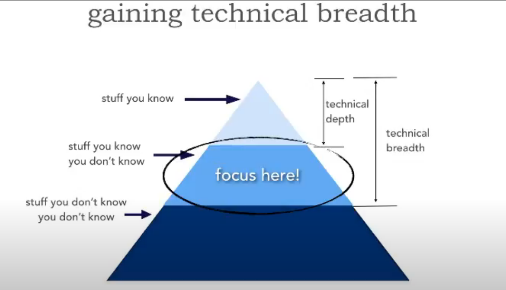

AWS Virtualization with Anthony Liguori
这篇podcast 谈论了AWS 虚拟化技术的演进史，从EC2谈起，到之后的Outpost，Fargate，Serverless。
最开始EC2用的虚拟化技术是Zen，后来他们开始构建自己的硬件系统，也就是Nitro Project。他们最初的希望是它能够很大程度得简化系统，从而改善性能。
谈及Lambda的时候，Anthony谈到了他们最重视的是安全，而EC2 instance是他们安全方面非常成熟的产品，也就自然成为了lambda使用的平台。每个lambda function都是一个EC2 instance。
讨论到底层架构，他们说到Nitro 就是一个bare-metal的系统。Firecracker在其之上运行，跑一些程式，一些在Firecracker的代码允许一些程式去启动和执行。Hypervisor是一个平台，你可以在上面启动不同的虚拟机；VMM（virtual machine monitor）是一个针对那些虚拟机的监控器。那Nitro就是Hypervisor，而Firecracker就是VMM。
他们针对Fargate和Serverless的优化，简单点来说，就是在启动过程中去除那些陈旧的，对于container不重要的东西，让启动时间减少。
Anthony提到，quantum computing是下一个可以改变世界的新技术。
Encouraging a Culture of Written Communication
这篇文章提到了书面交流的文化，我认为对于大多数在特殊时期在家上班的人来说，比较受用。
很多人觉得书面交流需要比较正式，但是那些主要是针对更广大的受众，或者是针对上级的交流。对于组内交流或者是问问题，书面交流不一定非要那么正式，错别字，语病都是可以被允许的。
书面交流的另一个好处：它容易被搜寻到。但另一个问题是，我们需要有一个平台去存储这些信息和知识，这样人们不会因为太多信息源而迷失方向，书写者也不会因为它而耽误书写的进度。
但是太过于依赖书面交流也有不好的地方，在有些时候，一个视频电话可能解决问题更快，更方便。不要在这上面墨守成规。
Thinking out loud。在你对有些事情不确定的情况下，可以把思路写在公用的频道里，让别人也看到，这样别人可以给你反馈。在软件事故发生的时候，这会变得很有用，大家会快速得交流，也就能够很快得对事故有一个一致的理解和解决方案。没有私人对话或者视频会话，这会变得更搞笑。
Soft Skills: Gaining Technical Breadth
这个视频谈及了如何增长技术广度，如图所示，“你知道的技术”被认为是技术深度，“你知道你不知道的技术”被认为是技术广度。作为一个相当架构师的人来说，我们需要增加技术广度，然后增加技术深度。

Mark提到三个信息源：InfoQ，Thoughtworks Tech Radar，DZone。他每天的习惯是花20分钟浏览收到的订阅邮件，然后如果有感兴趣的内容，会标注下，留到晚上或者周末细读。日积月累后，就会增长技术广度。
Controlled Chaos: Taming Organic, Federated Growth of Microservices
This talk mentions that microservices architecture is evolving through organic federated growth. The agility that the enterprises crave ends up with an architecture that we can't control. And in such a distributed architecture, metrics and tracing might not work that well. One interesting thing he mentioned is that building distributed systems may force a new waterfall thinking on devs as there is a long ramp before you can deploy that. Instead, build resilient federations based on DDD, and compensation strategy if anything happens. For operators, rapid detect-react loops are really important, which should be based on golden signals(requests, latency, concurrency, bandwidth), metrics, etc...